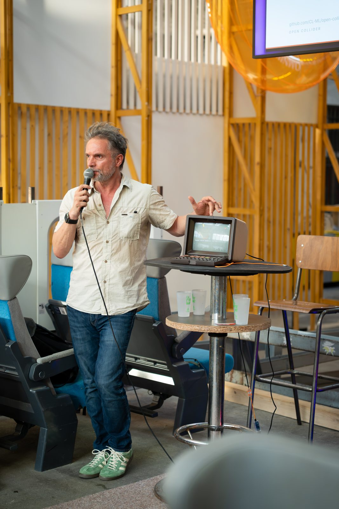
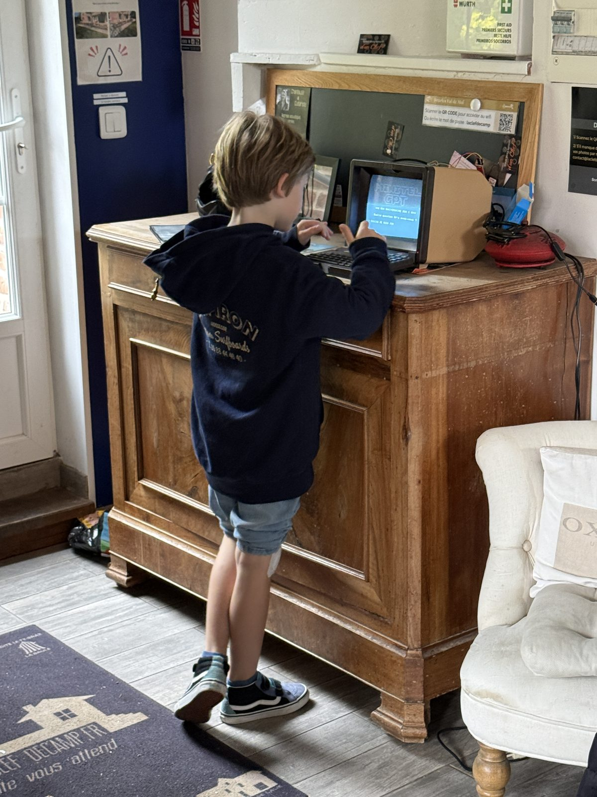
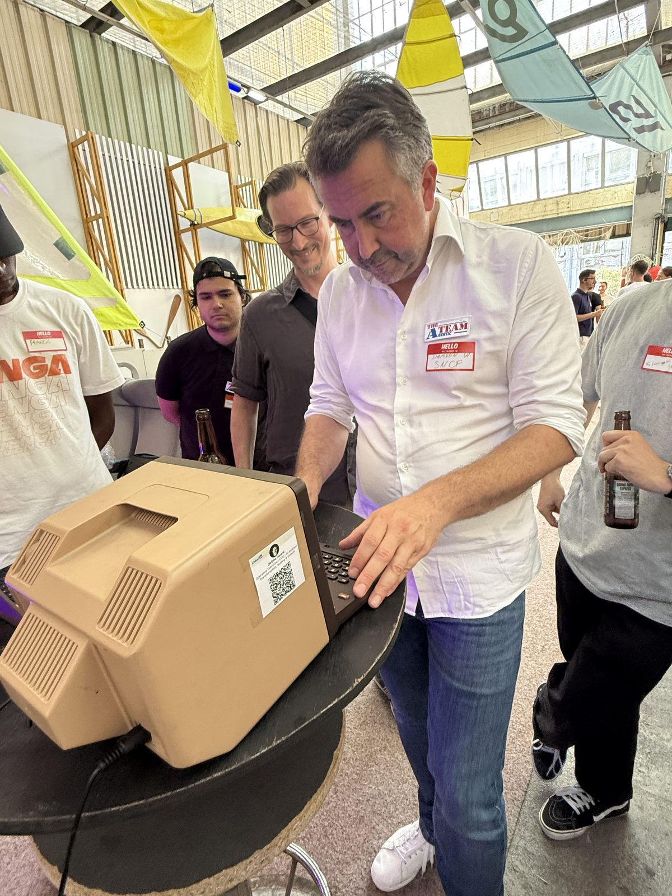
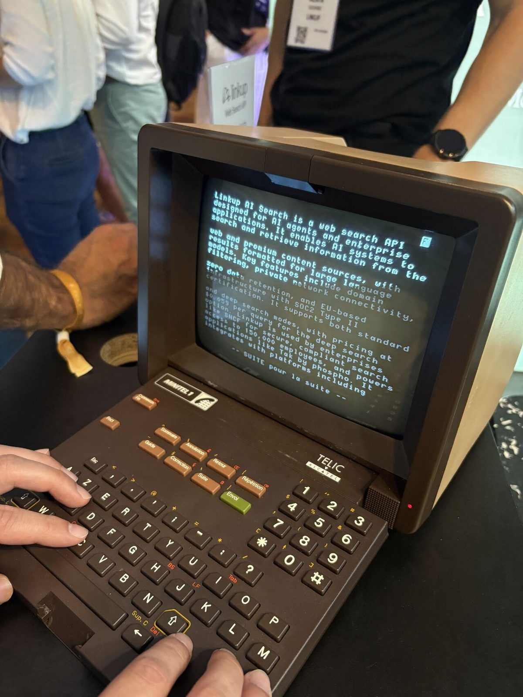

L'offre
Un Minitel authentique des années 80, remis en état de marche, propulsé par l'IA - et entièrement personnalisé pour votre événement.
Chaque dispositif est livré avec une personnalité sur mesure : le ton, le vocabulaire et les réponses de l'IA sont adaptés à votre marque, votre thème ou l'esprit de votre soirée - exactement comme nous l'avons fait pour un anniversaire « bloqué années 80 », pour le stand LinkUp au Raise Summit, ou pour l'événement Cursor × Anthropic chez SNCF Voyageurs.
L'application peut aussi être chargée de contenus spécifiques au client : documentation produit, argumentaire commercial, anecdotes internes, FAQ événement... de quoi nourrir des réponses qui parlent vraiment de vous et de votre actualité.
Formule sur devis, clé en main : matériel, personnalisation, installation et présence sur site possibles.

Voir MINITEL GPT en action
Déjà sur le terrain
Quelques dispositifs livrés pour des marques et des salons.




Le stand LinkUp a même été repris par le salon dans sa propre vidéo de résumé : à voir sur LinkedIn.
Ils en parlent
Quelques retours et publications autour des dispositifs déployés.
Équiper vos sièges d'entreprise
Une personnalité pour chaque événement
Ton, vocabulaire et univers de réponse calqués sur votre marque ou le thème de votre soirée - configurables depuis l'interface d'administration, sans ligne de code.
Vos contenus injectés
Documentation produit, argumentaire, FAQ interne, anecdotes... les fichiers de connaissance du preset nourrissent les réponses avec votre propre matière.
Installations permanentes
Au-delà de l'événementiel ponctuel, nous équipons aussi des sièges d'entreprise avec des expériences sur mesure - référence confidentielle à venir.
Applications 100% sur mesure
Au-delà de la personnalisation de l'interface de chat, nous développons des applications spécifiques, adaptées à votre environnement technique.
Connexion à vos propres API et bases de connaissance, scénarios de dialogue dédiés, habillage graphique Vidéotex... jusqu'à des jeux en réseau reliant plusieurs Minitel pour des animations collectives. Chaque projet est étudié avec vous en fonction de votre contexte technique et de vos objectifs.
Un événement en préparation ?
Parlez-nous de votre projet - date, lieu, nombre de dispositifs, univers souhaité.